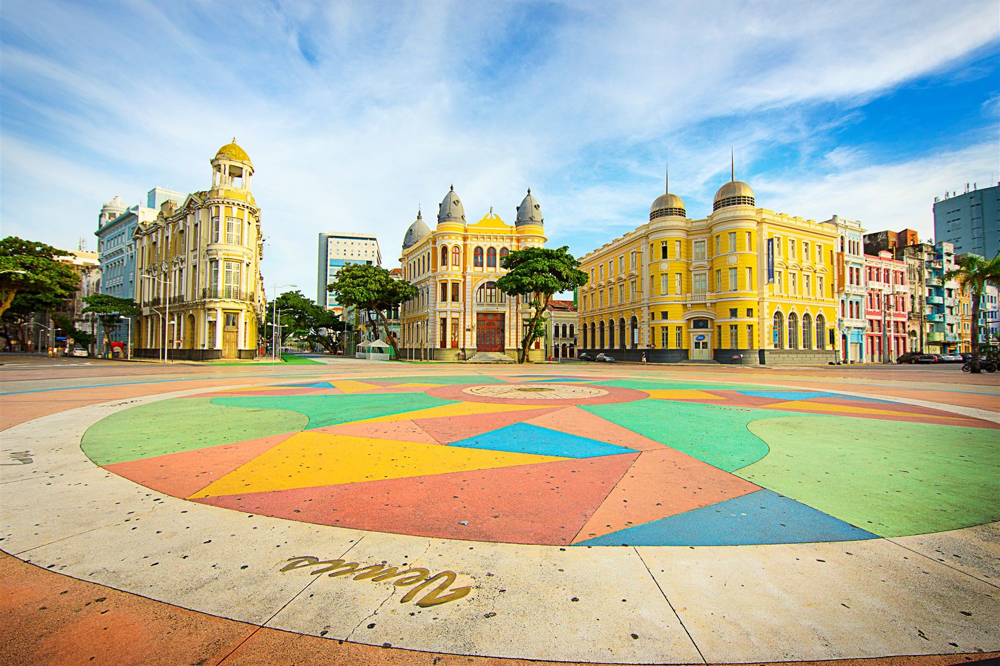
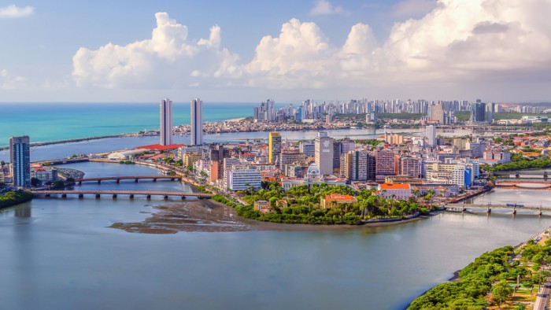
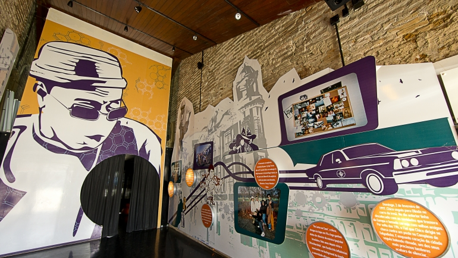

O que fazer em Recife (PE): dicas + principais pontos tur√≠sticos üôÇ
Capital de Pernambuco, Recife tem sua história ligada ao porto da cidade e recebeu esse nome por conta da
barreira de arrecifes ao seu redor. Antes de qualquer coisa, a região é perfeita para quem procura por atrações
históricas, muito lazer e, claro, belas praias. Além disso, é lotada de rios, pontes e canais. Pudera: ninguém
ganha o título de Veneza Brasileira à toa, né? Em linhas gerais, leve uma roupa bem leve e sapatos confortáveis
para explorar todas as atrações, viu? Vocês vai ver que elas são muitas!

Marco Zero - Centro Recife

Centro do Recife Vista érea

Marco Zero do Recife

Museu Cais do Sertão

Memorial Chico Science